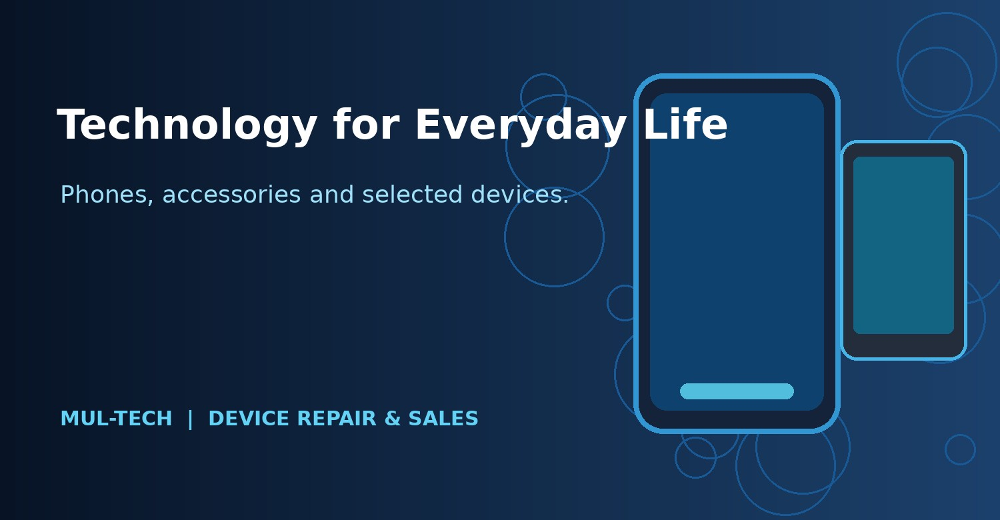

Phone accessories
Cases, screen protectors and other protective accessories.

Mul-Tech may offer selected devices, parts and accessories, depending on availability and sourcing.
Cases, screen protectors and other protective accessories.
Cables, chargers and selected power accessories.
Selected earbuds and other audio products.
Selected new or used phones, replacement parts and other items.
Availability and prices are confirmed on inquiry.
Ask about availability